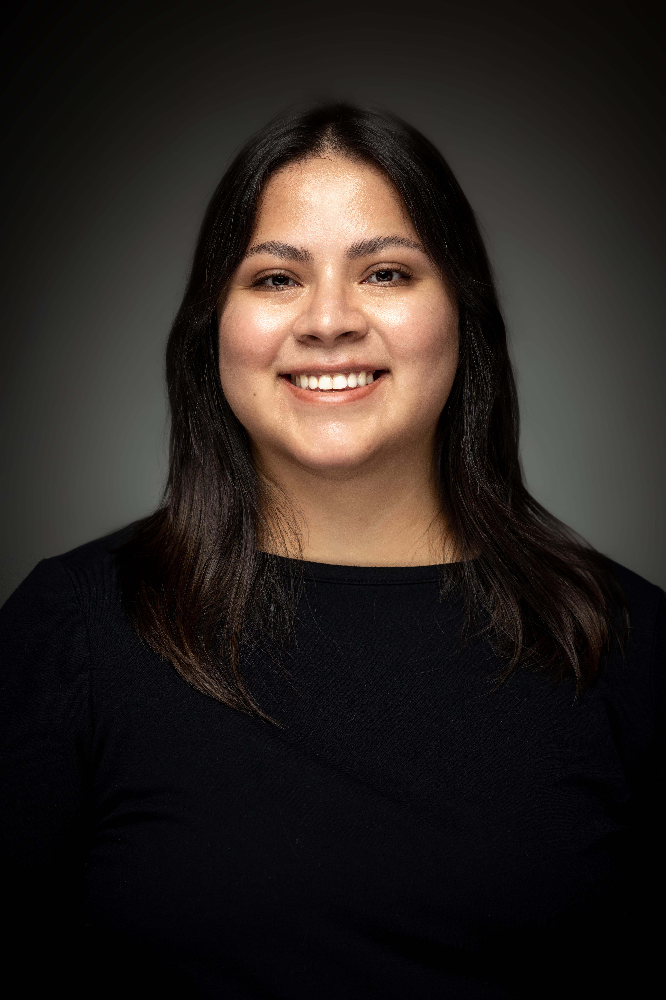

About me
A little about Paola.

Hi! I'm Paola, a web developer and digital accessibility advocate based in Utah. I'm currently studying Web and User Experience with a Full-Stack Development emphasis at Weber State University.
In my professional work, I serve as a Digital Accessibility Coordinator, helping Salt Lake Community College implement accessible content practices. I genuinely believe that navigating a website or reading a document should be accessible to everyone.
Outside of work and school, I love to get into nature, and try new hiking trails or you might also find me binge-watching tv shows or spending time with family.
At a glance
| Currently studying | Web & User Experience, Weber State University |
| Emphasis | Full-Stack Development |
| Based in | Utah, USA |
| Focus areas | Accessibility, Front-End, UX Research |
| Favorite tools | Figma, VS Code & Lucid |